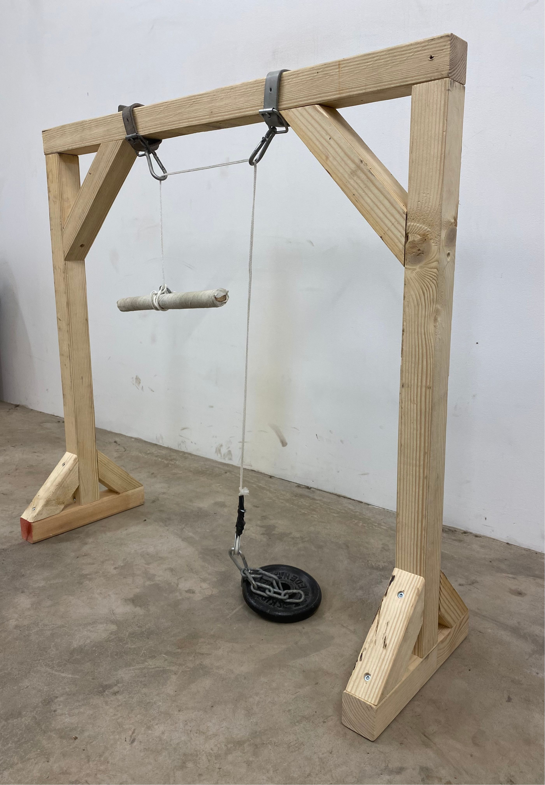
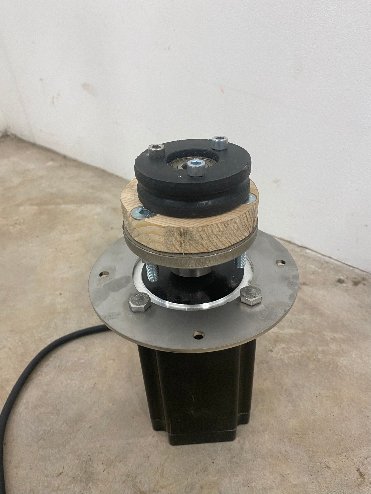
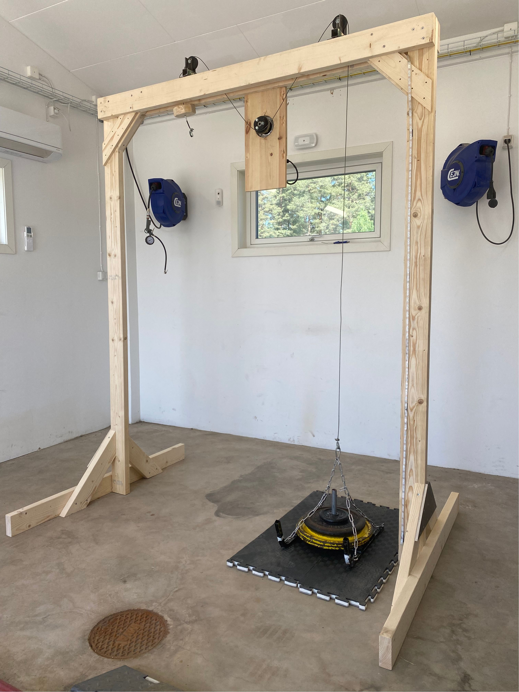
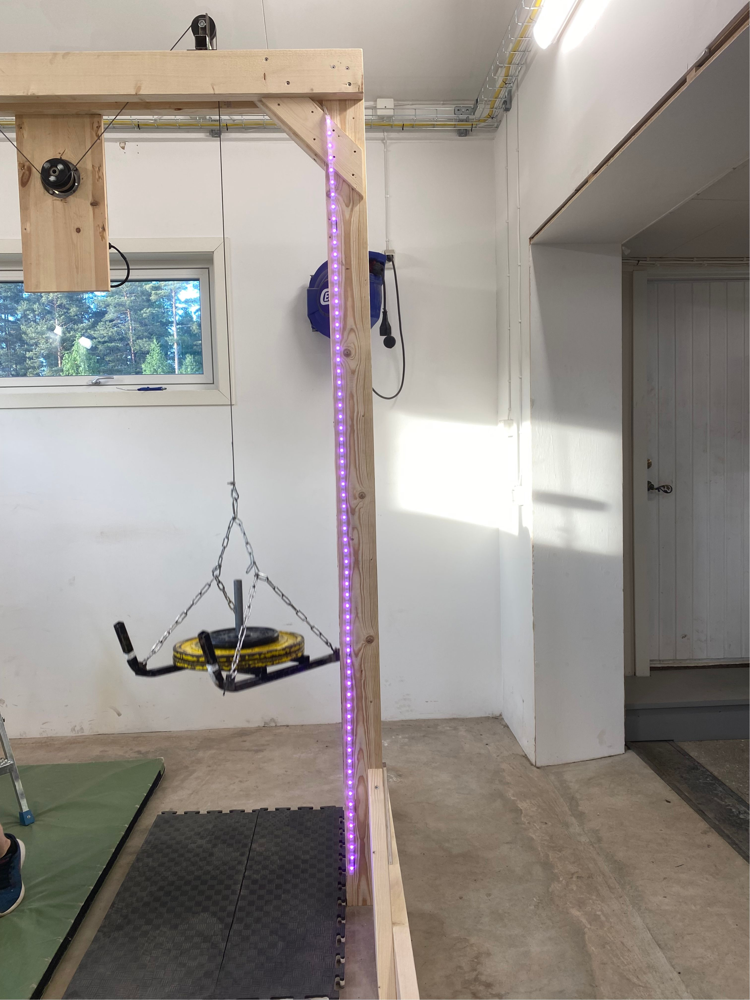
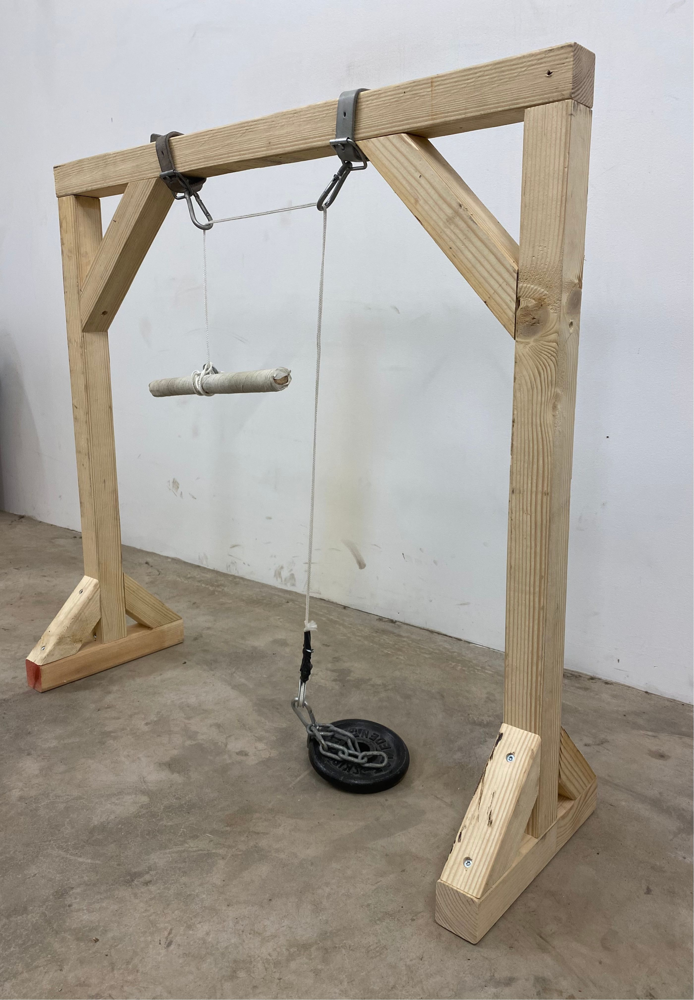
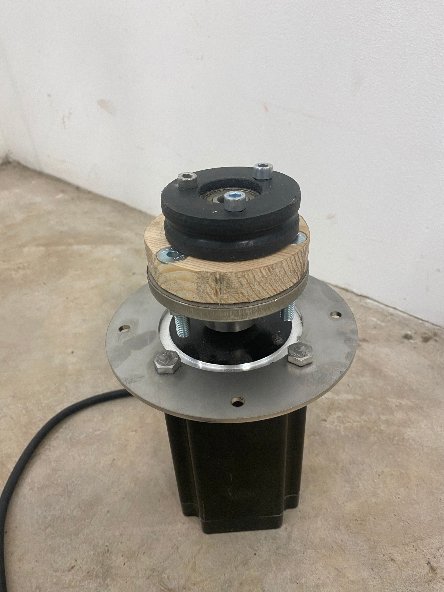
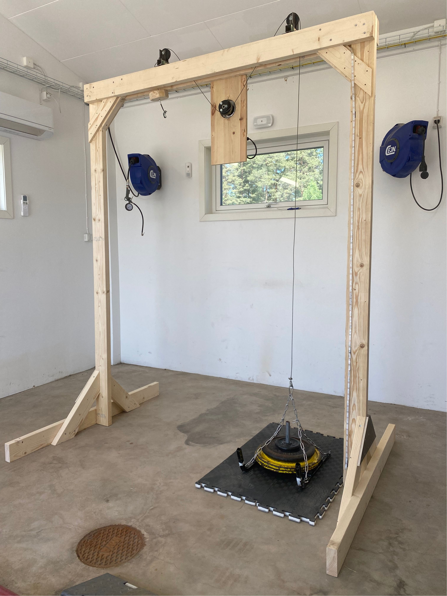
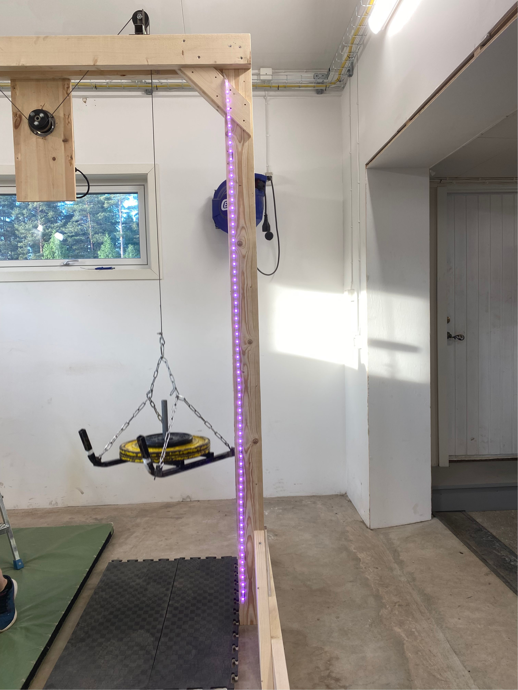

Project 1: Designing for Human-Powered Interaction in Sustainable Energy Generation
This master’s thesis project focused on designing human-powered interaction systems to generate energy through everyday activities, exploring how users engage with and perceive these systems within the context of their daily routines. The core design challenge was integrating physical effort into modern lifestyles in a way that balanced user engagement with convenience and comfort.
Prototypes were developed to test how physical activity could be converted into energy. Through user testing, the project examined how factors like effort, time commitment, and interaction flow influenced user adoption and engagement with the systems.
Key insights highlighted the tension between users’ preferences for convenience and the need for sustained physical effort. Participants were less willing to exert effort unless seamlessly integrated into their existing routines. This underscored the need for intuitive, adaptable designs that balance comfort with active participation, encouraging sustainable energy behaviors without disrupting daily life.
The project also revealed that designing human-powered systems requires a multidisciplinary approach, blending media technology, design, and engineering expertise. For such systems to be viable for more power-hungry devices (beyond low-power solutions like lamps and light switches), a shift in our understanding of energy use, household habits, and sustainability is essential. This study emphasizes the complexity of designing systems that accommodate modern lifestyles while fostering more sustainable energy practices.

 






